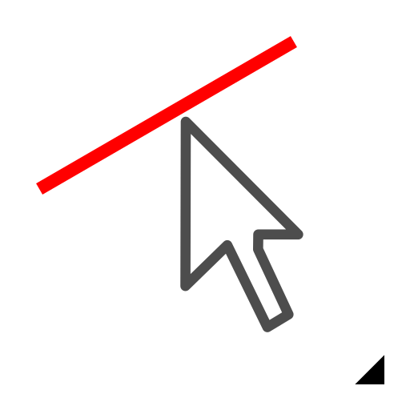

(De-)Select Intersected Entities
Toolbar / Icon:

 Menu: Select - (De-)Select Intersected Entities
Shortcuts: T, X | U, X
Commands: selectintersected | tx | ux
Menu: Select - (De-)Select Intersected Entities
Shortcuts: T, X | U, X
Commands: selectintersected | tx | ux
Description:
Selects or deselects all entities that are intersected by a line.
Procedure:
- Choose the
selection mode in the options tool
bar.
- Click the start point of the intersection line.
- Click the end point of the intersection line.
- All intersected entities match and are selected or deselected depending on
the selection mode.